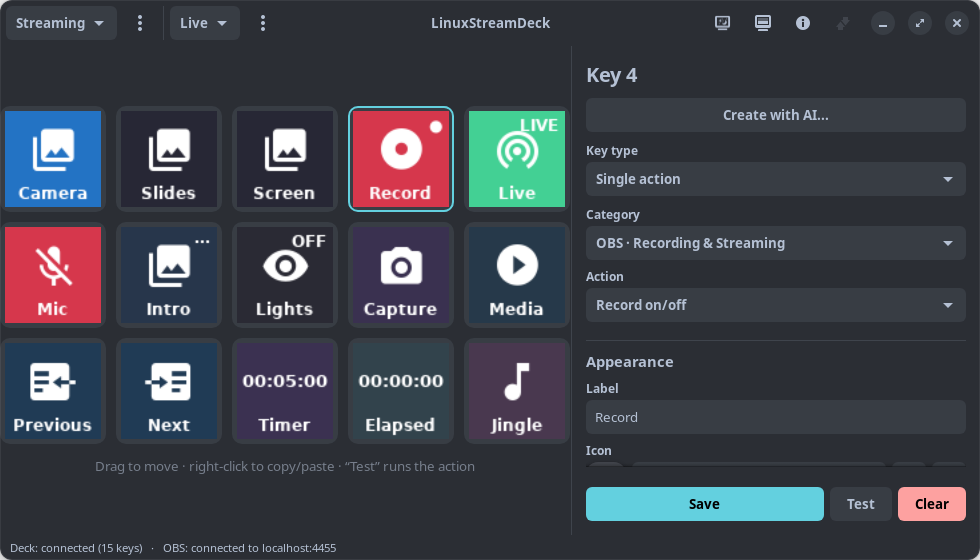
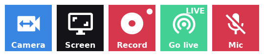
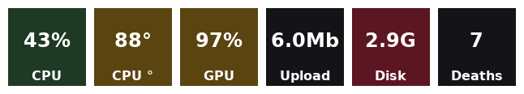
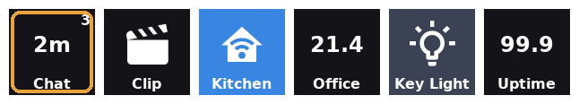
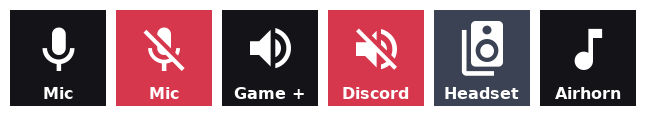
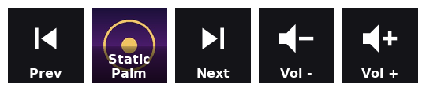
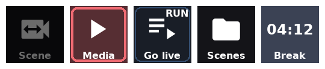
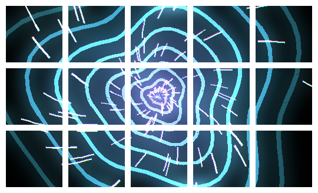

◉
OBS is the point, not a plugin
29 OBS actions with live feedback on the keys, plus a raw-request escape hatch that reaches 100% of the obs-websocket v5 protocol. The active scene lights up, recording turns red, a muted mic is marked.
Elgato ships software for macOS and Windows only. This is a GTK4 desktop application built around deep OBS Studio integration, with Twitch, Home Assistant, Key Lights and per-application audio native rather than bolted on.

The Linux community has built several genuinely good Stream Deck projects and they deserve credit. These are the things this one does differently — not better at everything, different on purpose.
29 OBS actions with live feedback on the keys, plus a raw-request escape hatch that reaches 100% of the obs-websocket v5 protocol. The active scene lights up, recording turns red, a muted mic is marked.
A key that cannot work is faded. A key whose action just failed is outlined in red. A measurement the machine does not report shows a dash, never a zero — because a zero is a claim.
Twitch, Home Assistant, Elgato Key Lights, per-application audio, HTTP endpoints and machine monitoring are in the box. Nothing to install, nothing running under Wine.
The on-screen grid mirrors the physical device, so you can configure and test every key — single, double and long press included — before the deck ever arrives.
Media through MPRIS, audio through PipeWire, shortcuts through ydotool. No faked media keys, no X11 assumptions, no privileges.
A pre-flight check answers, on the deck itself, the question asked in the minute before streaming: microphones, cameras, disk, stream target — and says plainly what it could not check.
Every key below is drawn by the application's own renderer, so this is exactly what the hardware shows.
Scenes, recording, streaming, sources, filters, audio, transitions, the replay buffer, studio mode. The key shows what OBS is doing rather than what you last pressed, straight from obs-websocket events.
A scene key can even show a live thumbnail of what that scene is sending out — the fastest way to spot a dead capture card before you cut to it.

CPU, memory, GPU load and temperature, network throughput, free disk space — read straight from the kernel, so they keep working with OBS closed. Keys colour themselves amber and then red as a value gets into trouble.
Plus countdown timers, a stopwatch, and a counter for the things you lose track of.

A Twitch key tells you how long somebody has been waiting — not how many messages there are, because a count says nothing about whether you are ignoring someone. It can sound, and it can flash the whole deck when headphones are not enough.
Home Assistant entities come from a dropdown of what your server really has. Elgato Key Lights are found on the network by themselves. And one generic HTTP action reaches anything else that speaks REST.

Mute the game without muting Discord. Turn the music down without touching the microphone. Move the whole session between speakers and a headset with one key.
And a soundboard: send a sound to the virtual microphone and pick it up in OBS, Discord or a call, so everyone hears it — you included.

Transport over MPRIS, so one key works with Spotify, VLC, Firefox and mpv alike. Turn on show what is playing and the key fills with the album art and the artist.
The song title deliberately is not shown: at 96 px it either gets cut or is drawn too small to read, while the cover is recognisable before you read anything.

A key whose every action needs OBS is faded while OBS is closed, so "not ready" stops looking like "idle". A key whose action just failed gets a red outline for a few seconds, because that is where you are looking.
Long sequences show RUN with a slow breathing halo while
they are working. Folders group related keys without spending a page.

Eleven coordinated full-deck screen savers, drawn across the real grid of whatever deck is connected, with their own brightness and idle delay. A physical deck also wakes with a short startup sequence that spells its name across the keys.
You choose what it leaves on screen after a clean exit, too: the firmware standby image, every key off, or one image of your own.

Search by what you want to do rather than by where it lives. Try
mute, scene, temperature or
clip. Press / from anywhere to jump here.
65 actions
Show what a Home Assistant entity reports, live on the key: a temperature, a door, whether the washing machine is running.
Turn a Home Assistant entity on or off, or run a scene or script. The key lights up while the entity is on.
Make an Elgato Key Light brighter or dimmer, or set a level.
Switch an Elgato Key Light on or off. The key lights up while the light is on.
Make an Elgato Key Light warmer or cooler, or set a colour temperature between 2900K and 7000K.
Switch to a selected profile and its own set of pages.
Switch directly to a selected page in the current profile.
Switch to the next page, wrapping to the first page after the last.
Show which page is active. Pressing it does nothing, so it can sit next to the page navigation keys.
Switch to the previous page, wrapping to the last page from the first.
Trigger any internal OBS hotkey by name.
Show a live measurement on the key: dropped frames, bitrate, stream or recording time, free disk space, CPU or FPS. System CPU and free disk space keep working while OBS is closed.
Check audio, cameras, disk, CPU, the stream destination and your Twitch title and category, and show the results across the whole deck. Reports only; changes nothing.
Send any obs-websocket v5 protocol request. 100% API coverage.
The key lights up when the input is muted. The scene only narrows the list of inputs to choose from; muting applies to the input itself, on every scene.
The scene only narrows the list of inputs to choose from; the change applies to the input itself, on every scene.
The scene only narrows the list of inputs to choose from; the change applies to the input itself, on every scene.
Control video/audio sources (Media Source, VLC).
Mark this moment in the recording so it is easy to find later. Needs OBS 30.2+ recording to hybrid MP4.
Pause or resume a recording in progress, without closing the file. The key lights up while it is paused.
Start or stop recording. «toggle» switches between the two, so one key does both.
Start or stop the replay buffer, which keeps the last seconds of video in memory ready to be saved.
Save what the replay buffer is holding to a file, capturing the moment that just happened.
Save a PNG screenshot of a source or scene.
Close the current recording file and carry on into a new one, without stopping. Needs OBS 30+.
Start or stop the live stream. «toggle» switches between the two, so one key does both. The key turns green and shows LIVE while you are broadcasting.
Start or stop the virtual camera, so OBS shows up as a webcam in Zoom, Meet, Discord and anything else.
Switch to another OBS profile, swapping its encoding, output and recording settings. This is an OBS profile, not a LinuxStreamDeck one.
Switch to another OBS scene collection, swapping the whole set of scenes and sources at once.
Put a scene in the studio mode preview. The key can show a live preview of what that scene is showing.
Choose the transition used between scenes, and optionally how long it lasts in milliseconds.
Turn studio mode on or off, so scenes are staged in preview before going to program. The key lights up while it is on.
Switch the program scene. The key lights up when it is the active scene, and can show a live preview of what that scene is showing.
Send the preview to program.
Enable, disable or toggle a filter applied to a source, such as a chroma key, a colour correction or a noise gate.
Change one transform property of a source in a scene. «adjust» adds to the current value, so a key can nudge it repeatedly.
Reload a browser source, bypassing its cache.
Replace what a text source displays. Useful for a countdown message, a «back in 5» card or a now-playing line.
Show, hide or toggle a source in a scene. Sources inside a group can be picked too. The key lights up while the source is visible.
Ask an application to quit, or force it to stop.
Start a countdown shown as HH:MM:SS. Press again while it is running or after it finishes to stop and reset it. An optional sound can play on completion.
Count something on the key: deaths, takes, attempts. A press adds, and holding the key resets it. Give it a negative step to count down.
Send a keyboard shortcut to the focused application. Pick a preset to fill in the shortcut, then edit it if your desktop uses another one.
Control the running media player through MPRIS, or the session volume.
Open a file, folder or program with the desktop's own handler.
Open a web address in the default browser.
Start an installed application, optionally closing it again with a long press.
Play a local WAV, MP3, OGG, FLAC or Opus file. Send it to the virtual microphone and it becomes a soundboard: OBS, Discord or a call can pick that up and everyone hears it. A multiple-action sequence continues after playback finishes or reaches its time limit.
Run a shell command in the background.
Alternate between two keyboard shortcuts, sending the next one on each press.
Count elapsed time as HH:MM:SS. Press again to stop and reset it to zero.
Make a device the one the session uses. Choose a second device too and one key moves between them, which is what speakers and a headset want. The key lights up while its device is the one in use.
Show a live machine measurement on the key: CPU, memory, GPU, temperatures, network throughput or free disk space. None of it needs OBS.
Change the volume of the speakers, the microphone or one application on its own. A mute key lights up while whatever it points at is muted.
Pause for the given time (MM:SS) before the next action. Meant for multiple / toggle keys, between two actions.
Post a highlighted announcement in your own Twitch chat.
Light up when somebody is waiting on you: a chat message, a new follower, a subscription or a raid. Shows who it was, how long they have waited and how many are unread, with an optional sound. Press it to mark them seen.
Clip the last few seconds of the stream, the same as the Twitch clip button. The channel has to be live.
Mark this moment in the Twitch broadcast so it is easy to find afterwards. Pairs with the OBS recording chapter marker.
Offer a raid to another channel, or cancel one already offered. Twitch opens the countdown on your chat; it never moves anyone by itself.
Change the Twitch category (the game). The name is looked up on Twitch when the key is pressed, so an approximate one still works.
Change the title of the Twitch stream.
Run an ad break of the chosen length. Only Twitch Affiliates and Partners can run ads; the key is faded for an account that cannot. The channel also has to be live, and Twitch enforces its own gap between breaks.
Show a live Twitch measurement on the key: viewers, followers, stream uptime, or whether the channel is live.
Call an HTTP endpoint and, if you want, show a value from its answer on the key. Covers anything that speaks REST: a home automation bridge, a webhook, a dashboard, your own server.
From nothing to a deck you actually use, in the order it makes sense to do it.
Download the .deb from the releases page and install it:
sudo apt install ./linux-stream-deck-X.Y.Z.deb
sudo ./packaging/refresh-appstream.sh # so software centres see it
The package is Architecture: all — the pure-Python app
plus two vendored dependencies, with GTK4, GStreamer, Pillow and
the keyring coming from apt. It recommends ydotool,
playerctl, pulseaudio-utils and
avahi-utils; each one that is missing simply disables
the keys that need it and says so.
sudo ./install-udev.sh once
(the package does it for you) and replug the deck, or it will not
open. Building from source instead? ./build.sh --apt
then ./run.sh.
In OBS: Tools → WebSocket Server Settings. Enable the server and copy the port and password. In LinuxStreamDeck, click the network button in the header and paste them.
The password goes to your desktop keyring, never to the configuration file and never into an export. The dot in the status bar turns green when it is connected, and the app reconnects on its own if OBS restarts.
| Type | What it does |
|---|---|
| Single action | One action, with live state feedback on the key. |
| Multiple actions | A list run in order. Insert a Wait action to pause between them. |
| Toggle (ON/OFF) | Two lists and a state, with its own look per state. |
| Random action | Picks one of its actions at each press. |
| Single / double / long press | A separate list per gesture. |
| Folder | Opens its own grid of keys, nested up to five levels. |
Any step in a list can be given a name, and the list shows that instead of the action, which is what keeps a long sequence readable. Steps reorder by dragging their handle, and copy between lists, key types and keys.
A list can also be told what a failure should do: carry on, or stop there. Stopping is right when the list is a recipe — "switch scene, wait, start recording" must not record the wrong scene.
Drag a key onto an empty slot to move it, or onto another key to swap them. Hold a drag over a folder for about a second and it springs open, so you can drop the key inside; holding over Back comes out again. Ctrl+Z takes back a clear, a paste or a move.
profile menu → Twitch account…, then read the code off the dialog
and type it at twitch.tv/activate. No password is ever
asked for and the tokens live in your keyring.
You then get: viewers, followers and uptime on a key; set the title or the category; clips; stream markers; ad breaks; raids; announcements. And the alert key, which shows how long somebody has been waiting — filterable down to questions and mentions, or to first-time chatters, so it keeps meaning something on a busy channel.
profile menu → Home Assistant…. You need the address
(http://homeassistant.local:8123 usually works) and a
long-lived access token: in Home Assistant, click your user name at
the bottom of the sidebar → Security → Long-lived access
tokens → Create token. Copy it immediately, it is shown
once.
The entity dropdown then fills with what your server really has. One key turns a light, a switch, a fan, a media player, a scene or a script on, off or over; another shows what an entity reports.
The Stream Deck display button in the header holds both. Choose one of eleven animations, an idle delay and a brightness of its own — and preview it immediately, with or without hardware connected.
The same dialog sets what the physical deck shows after a clean exit: the firmware standby image, every key off, or one image of yours across the whole grid.
Every save writes a backup, and timestamped copies are kept — profile menu → Restore a backup… lists them with what each one holds.
Export the whole configuration as a .lsdconfig bundle
that carries your icons, your audio files and your exit image, or
right-click one key and export just that as a .lsdkey.
Passwords, API keys and tokens are never exported: a machine
you move to enters its own.
| What you see | What it means |
|---|---|
| The deck never appears | USB permissions. sudo ./install-udev.sh, then replug it. The status bar says so after the second failed attempt. |
| A faded key | Every action on it needs a connection that is not there — OBS closed, no Twitch account, no Home Assistant. |
| A key outlined in red | Its action failed just now. The status bar says why, and the full reason is in the log. |
A key showing -- | The measurement is not available on this machine. A zero would be a claim; a dash is the truth. |
| A dropdown that is empty | Whatever fills it could not be asked. The field stays typable so you can enter a value by hand. |
| Scenes renamed in OBS | profile menu → Check keys against OBS…. It lists what no longer resolves and repoints them, saving a backup first. |
The full log lives at
~/.config/linuxstreamdeck/linuxstreamdeck.log and opens
from the profile menu. That is the thing to attach to a bug report.
The layout is read from the device, so screen savers, the startup sequence and a custom exit image are laid out across whatever grid you really have.
| Device | Keys | Grid | Status |
|---|---|---|---|
| Stream Deck Mini | 6 | 3 × 2 | Verified in simulation |
| Stream Deck Neo | 8 | 4 × 2 | Verified in simulation |
| Stream Deck Original / MK.2 | 15 | 5 × 3 | Tested on real hardware |
| Stream Deck + | 8 + 4 dials + LCD strip | 4 × 2 | Verified in simulation |
| Stream Deck XL | 32 | 8 × 4 | Verified in simulation |
| Stream Deck Pedal | 3 | no displays | Not supported, and says so |